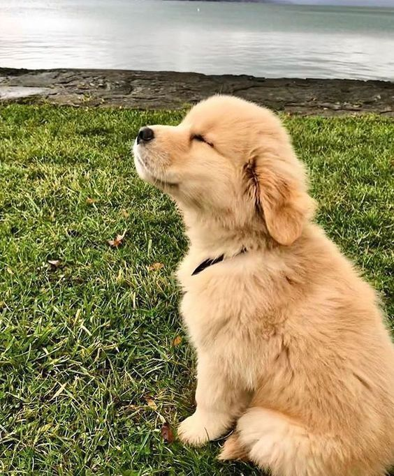

Dogs2Go

Can I not walk my dog?
- The first myth is that if a dog has a yard, you can not walk with it or walk a little. The fact is that the dog goes for a walk not only to pee and poop (not to mention the fact that in General, dogs are clean animals and prefer not to shit in their lair, if they are all right, but to move away). They need a walk in order to leave their own marks, smell the marks of others, get new information, visit new places, communicate with their relatives. Imagine that you are locked in a large, beautiful house with a courtyard, but the Internet, phone, and any kind of communication is cut off - and you sit in this Golden cage for the rest of your days! It's crazy, isn't it?? Also for your Pets without walking..
Communication with relatives-this behavior is also inherent in dogs, because they are social animals. By depriving them of this, you are putting them in prison in a solitary cell. Another thing is, if a dog already due to age does not want to communicate with other dogs or does it very selectively (it may have a couple of friends, but it does not want to play with the rest) - do not force it to make friends with everyone. If your pet has impaired communication (it is afraid or shows aggression to other dogs), then the task of the owner is to make efforts to correct behavior in order to establish communication with their own kind, and not to pretend that the dog does not need it.
- The second myth is about decorative dogs. No matter what size, breed, gender, age the dog was - it still remains a DOG, with the same vidotypic needs! That breed has the same needs as any other dog breed: food, water, its own place, walking, communication with relatives, a diverse, interesting life. So why does the owner deprive them of all this, "locking them up"?
What PROBLEMS arise in the absence of full-fledged walking (short-term walking or even in the absence of it)?
- aggression to other dogs, people
- fear of people, dog
- excessive barking
- they begin to destroy the house, gnaw everything, spoil, throw things around
- or they become depressed, their silent suffering leads to illness, and they die prematurely. Thus, you shorten the life of your pet.
What do we offer you?
All teenagers and not only teenagers want to earn money themselves. So what happens? you have a dog with whom there is no one to walk, and they at the same time have time, but there is no opportunity. Let's call them volunteers , because they are supposed to be. so the volunteers will leave applications, telling all about themselves up to the address of the house , and you in turn will see the candidates ,so to speak, for a walk with your dog.
So Let's Go